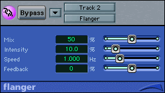

Topics:
Many of the effects that are most noticeable in modern music production are time-based. These are achieved by mixing a signal with a delayed copy of itself. Unlike dynamics and filter effects, which are often used to enhance recorded sound without being obvious to the listener, we use these to creatively alter the sound of our audio source.
Often, these effects become the sonic signatures of the artists who use them. In the 1980s, Andy Summers of the The Police immortalized the sound of chorused guitar in his work on all of the group's hit records. Longer delays gave David Gilmore of Pink Floyd his characteristic spacious solo guitar sound, while delays timed to the tempo of a song propelled the rhythmic guitar figures characteristic of the Edge's work with U2.
We can produce a range of effects by delaying a source signal by varying amounts. In order to be heard, the delayed signal needs to be combined with the original, unprocessed signal. The unprocessed signal is often called the "dry" signal and the processed signal is called the "wet" signal. When we use delays as insert effects, we'll always have the option to set the balance between the the two.
The diagram below illustrates the signal flow in a typical delay processor.
The signal path in a delay processor
Common parameters that we'll adjust in delay effects are:
Take a look at DDL-1, the delay unit found in Reason, and see where these parameters are adjusted. You'll notice that in addition to setting delay time in milliseconds, Reason also lets you time discrete delays to the tempo of a song.

Reason's DDL-1 delay
Perhaps the most obvious delay effect is echo, which refers to discrete repetitions of a sound over time. Even if we've never been near a mountain, we're all probably aware of the effect of yelling "HELLO!" in a canyon and hearing our voice repeat in the distance. This type of delay is one way to give a recorded performance a sense of space.
We'll begin to hear a delayed sound as a distinct repeat at a delay time of around 60ms. As you recall, sound travels about one foot for every millisecond of delay time. A 60ms delay is the amount of time it takes for a sound to travel to and be reflected from a wall 30 feet from the source. This type of very short echo is called slapback, and it's typically used to simulate the sound of a performance in a small, to medium-size empty room. The delay times used to produce slapback usually range from 75 to 125ms, and feedback is set short, so we'll only hear one or two repeats.

It takes 60ms for sound to travel 60 feet to and from a surface
We usually think of echo as having longer delay times and multiple repeats. If we continue to think of echo as simulating an acoustic phenomenon, longer delay times usually give the impression of larger spaces. Imagine playing or singing in a sports arena, the typical venue for large touring rock show. A room the size of a football field (100 yards or 300 feet long) will produce 600ms echoes. These types of longer delay times, when used subtly in a mix, can help give the illusion of a vocal or soloist performing in a large space.

It takes 300ms for sound to travel 300 feet to and from a surface
One of the problems with longer delay times that anyone who has played in even their high school gym has encountered is that these echoes can often repeat out of time with the musical tempo. Whenever something repeats, it sets up the expectation of a tempo in a listener, and echo is no different.
You'll notice that the Tape Delay plug-in that we'll be using in Logic allows you to set delay time using either milliseconds or tempo. This is a very convenient way to create delays that are timed to the tempo of a song. Although plug-ins that are integrated in desktop audio programs are increasingly making use of this feature, there are many processors, both hardware and software, that won't know about the tempo of your song. Let's do a little math to help us calculate delay times for rhythmic values at any tempo.
We express musical tempos in beats per minute or BPM. If our tempo is 120BPM, how long is one beat? Since our answer will be expressed in milliseconds, let's think of a minute as 60,000 milliseconds so BPM could be expressed as 60,000 divided by tempo.
Let's pull out our calculators!
What's the duration of a quarter note at 120 BPM?
60,000ms / 120 = 500ms
So, if the tempo of our song is 120 BPM, setting a delay time of 500ms will give us a perfect quarter-note delay. Once we know the duration of a quarter note at any tempo, it's easy to figure out the delay time needed to produce any other rhythmic figure.
Take a look at the following chart to see how this simple formula can be used to find delay times for rhythmic values at any tempo.
| Delay
Times for Common Rhythmic Values at 120 BPM |
||
|---|---|---|
| Rhythmic
Value |
Multiplier |
Delay
Time |
| Whole
Note |
Quarter
Note x 4 |
2000ms |
| Half
Note |
Quarter
Note x 2 |
1000ms |
| Quarter
Note |
Quarter
Note x 1 |
500ms |
| 8th
Note |
Quarter
Note x .5 |
250ms |
| 16th
Note |
Quarter
Note x .25 |
125ms |
| 8th
Note Triplet |
Quarter
Note x .333 |
167ms |
| Quarter
Note Triplet |
Quarter
Note x .666 |
333ms |
| Half
Note Triplet |
Quarter
Note x 1.333 |
667ms |
Let's try one for practice. What delay time would be needed to produce half-note echoes at 97 BPM?
Answer:
A quarter note
at 97 BPM is: 60,000 / 97 = 619ms
For a half-note delay: 619ms x 2 = 1238ms.
Rock and pop music production places a high priority on getting a big or larger-than-life sound from instruments such as guitars and vocals. Orchestras and choral groups are traditional examples of more is better when trying to achieve a big sound. If you're working on a big budget CD or soundtrack project, then assembling and recording the required ensemble to achieve a big sound may be possible. However, there are ways to achieve similar effects in the virtual world of desktop production.
The easiest way to make an instrumental part sound bigger is to double it by playing in unison with it. One way to achieve this effect is to have a player overdub an exact copy of their part on another track in a process called double-tracking. This demands a tremendous amount of skill from a performer as well as many extra tracks.
The delay effect of doubling uses a very short delay time that can't be heard as a repetition, somewhere in the range of 20 to 50ms. The idea is to simulate the sound of two instruments playing in unison. Since two musicians will never play at exactly the same time, using a slight delay will simulate this. This electronic way of creating instrumental doubling is very popular when there's only a limited number of tracks for recording.
When musicians play together or double-track, they actually won't play exactly 20 to 50ms later than the original performance. The amount of delay will be changing all the time. To accurately simulate this electronically, we'll need to automatically change delay times. When we use some electronic means to automatically change a parameter in an effects processor or synthesizer, we call it modulation. Most delay devices will use a low frequency oscillator (LFO) to automatically make the delay time slightly longer or shorter. We'll be looking at how an LFO works in greater detail in upcoming lessons on synthesizers. For right now, we can think of it as a tool that will continuously sweep a range of parameters, in our case, delay times. Flanging and chorusing are time-based effects that use an LFO to change delay times. We can think of them as modulation effects.
Flanging is produced when a signal is delayed a very short amount of time, on the order of .1 to 15 milliseconds, and is mixed with the dry signal. As these two are combined, multiple bands of frequencies are boosted and cut to produce a characteristic "whooshing" sound called comb filtering. With the LFO changing the delay time, this effect sweeps through the audible range. We can think of flanging as a kind of sophisticated filtering effect that might be simulated by boosting or cutting several bands on a graphic EQ at the same time.
The diagram below illustrates how an audio signal is processed in flanging, as well as some typical parameters we use to control the effect. Compare these to the controls in Logic's Flanger plug-in.
| Flanger
Functions and Parameters |
|
|---|---|
|
Signal flow in a typical flanger |

Flanger settings in a Logic plug-in |
|
|
Chorusing
Chorusing is a way of simulating the sound of an ensemble performing musical parts. By increasing the delay time we used in flanging to between 15 and 50 milliseconds, we can begin to approximate the timing variations that occur in a group performance. Although this is a way we can create a chorus effect using delay, most chorus effects will process a signal by using an LFO to control subtle changes in pitch. After all, even in the closest unison, performers will still be slightly out of tune with each other.
| Chorus Functions and Parameters | |
|---|---|
|
Signal flow in a typical flanger |
Chorus settings in a Logic plug-in |
|
|